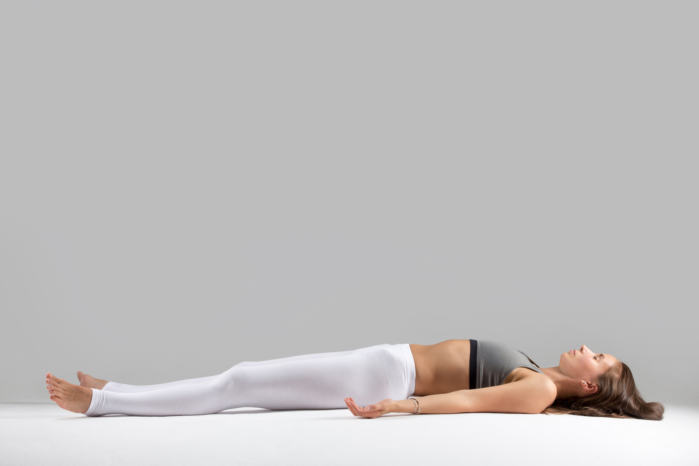
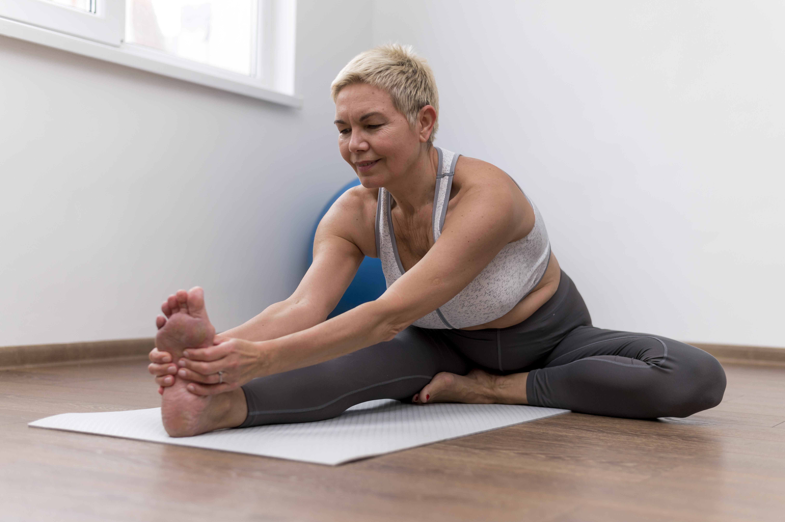
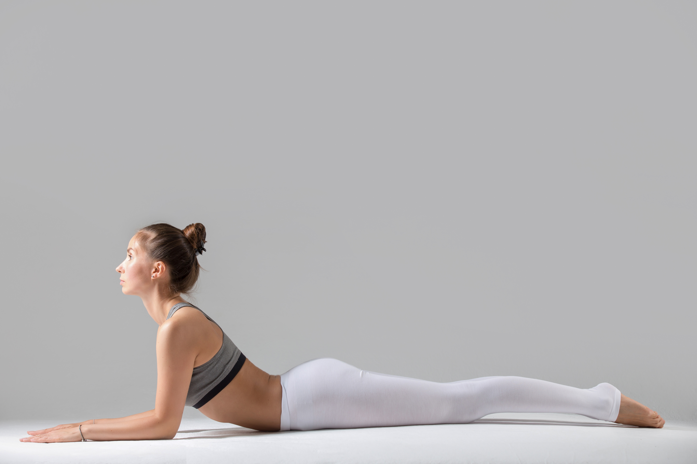

Yoga Poses for Relaxation

Child's Pose (Balasana)
Gently stretches the lower back, hips, and thighs. Helps calm the mind and relieve stress.

Corpse Pose (Savasana)
Encourages deep relaxation and mental clarity. Great for stress relief.

Cat-Cow Pose
Gently stretches the spine and relieves tension in the back and neck.

Standing Forward Bend
Helps relieve stress, stretches the hamstrings, and improves circulation.

Downward Dog (Adho Mukha Svanasana)
Improves circulation, stretches the back, and helps relieve stress and fatigue.

Seated Forward Bend (Paschimottanasana)
Calms the mind, reduces anxiety, and deeply stretches the hamstrings and spine.

Legs Up the Wall (Viparita Karani)
Reduces stress, improves circulation, and helps relieve headaches and insomnia.

Lotus Pose (Padmasana)
A meditative pose that promotes mental clarity, relaxation, and mindfulness.

Sphinx Pose
Gently stretches the spine, opens the chest, and helps improve posture and relaxation.